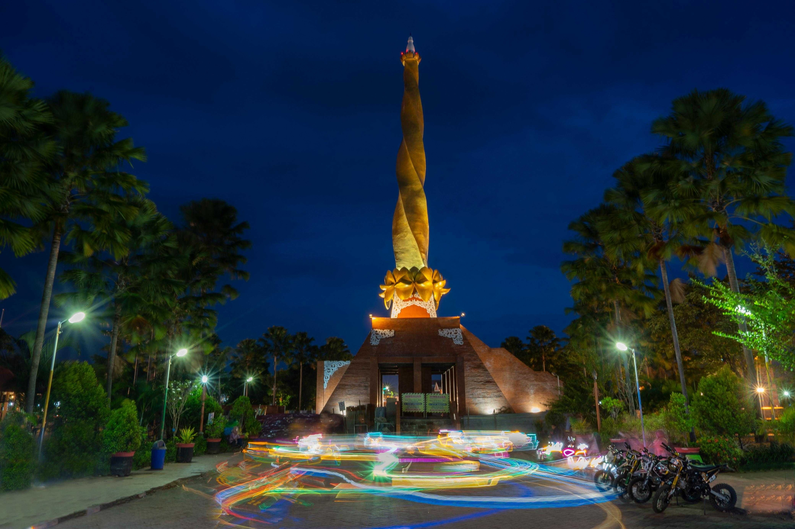

ikon kota Mojokerto.
Alun-alun Mojokerto memiliki luas sekitar 2 hektare dan dilengkapi dengan berbagai fasilitas, seperti lapangan sepak bola, lapangan basket, jogging track, taman bermain anak, dan air mancur. Alun-alun ini juga dikelilingi oleh bangunan-bangunan bersejarah, seperti Masjid Agung Mojokerto dan Gedung Juang 45.
Alun-alun Mojokerto menjadi tempat yang penting bagi warga kota Mojokerto. Alun-alun ini menjadi ruang publik yang dapat digunakan untuk berbagai kegiatan, seperti berolahraga, bersosialisasi, dan merayakan hari-hari besar. Alun-alun ini juga menjadi tempat penyelenggaraan berbagai acara, seperti konser musik, pameran, dan festival.
"pejuanganmu sangat berarti untuk bangsa indonesia" – Naufal thoriq
Alun-alun Mojokerto adalah ruang terbuka hijau yang terletak di pusat Kota Mojokerto, Jawa Timur. Alun-alun ini merupakan salah satu ikon kota Mojokerto dan menjadi tempat berkumpul warga untuk bersantai dan berekreasi.